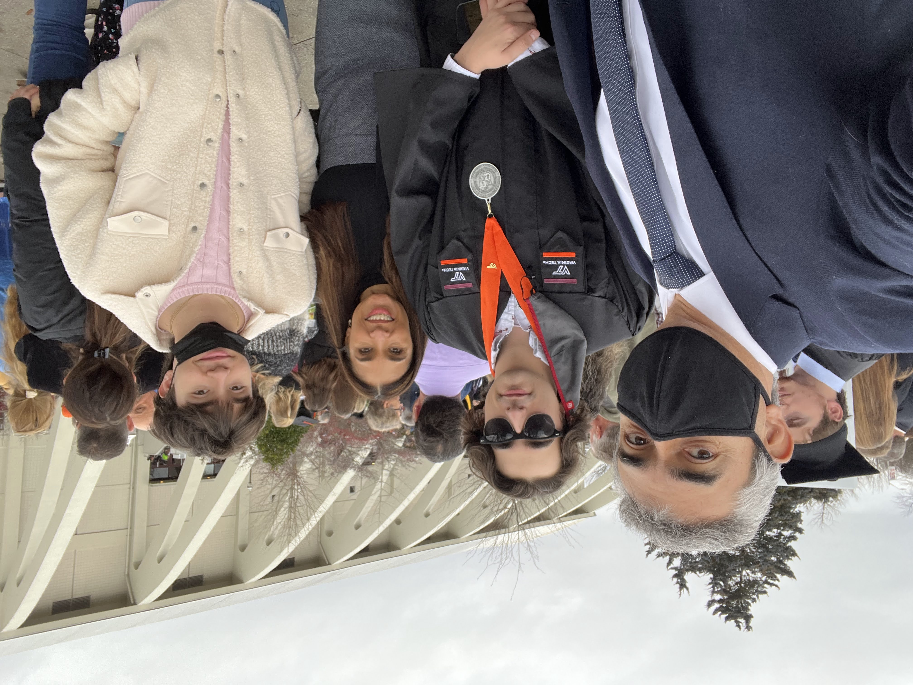

Before we get too into the technical side of things, I thought I'd share a bit more about my background
and experience. I was born in the city of Guadalajara, Mexico, but moved to the small town of
Blacksburg, Virginia when I was still a young child.
Growing up, I was introduced to the world of engineering by my father, who shared his passion for
technology with me.
In elementary school, I was invited to join my friend's FIRST Lego League team, where we built small
robots to compete in local competitions.
This experience sparked my interest in robotics and programming, and I continued to pursue these
interests throughout middle school and high school through the FIRST Tech Challenge and FIRST Robotics
Competition. During my time participating on the various teams, I earned
several positions of leadership including Safety Captain, Programming Lead, Head Driver, and Team
Captain. With the help of my teammates, I was able to lead our team through multiple successful
competitions, earning several awards and the qualifications to the World Championships.
After graduating high school, I attended Virginia Tech where I earned my Bachelor's degree in Computer
Engineering with a focus on Machine Learning. During my time at Virginia Tech, I engaged in a variety of
projects to hone my skills in the Machine Learning and Artificial Intelligence
fields.
I also had the opportunity to perform undergraduate research through the Orbital Launch Vehicle Team at
Virginia Tech, where I helped design and build the avionics systems for high-powered rockets.
I continued my Virginia Tech journey by pursuing a Master's of Engineering degree in Computer
Engineering. My specialization was in Computer Vision, where I developed several models for the
detection and classification of tumors in medical images.
In my professional career, I've had the opportunity to work as a Software Engineer for several Space and
Defense Companies including BAE Systems and Alaire Technologies.
Currently my role consists of providing support for the Naval Research Lab in the development of
advanced Intelligence, Surveillance, and Reconnaissance (ISR) systems. My interests and skill sets
uniquely position me to contribute to diverse projects, including the development of Machine Learning
models dedicated to enhancing the safety and security of our nation's critical systems.
Outside of work, I enjoy spending time with my friends and family, playing video games, and exploring my
local community with my dog Kacheek. I'm also an avid reader, and I love to learn new things. I'm always
looking for new
opportunities to expand my knowledge and skills, so if you have any suggestions or ideas, please feel
free to reach out!